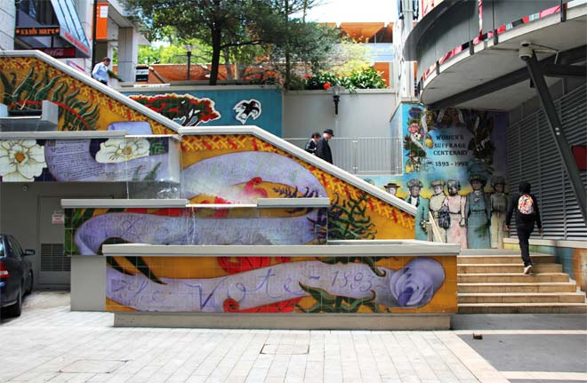

Suffrage milestones
- 1869
- Mary Ann Müller (‘Femina’) wrote ‘An appeal to the men of New Zealand’, advocating votes for women.
- 1871
- Mary Colclough (‘Polly Plum’) gave her first public lecture on the rights of women, including their right to vote.
- 1874
- J. C. Andrew in the House of Representatives urged that women be enfranchised.
- 1878
- Robert Stout unsuccessfully proposed in his Electoral Bill that women ratepayers be eligible to vote for and be elected as members of the House of Representatives.
- 1879
- The government’s Qualification of Electors Bill was amended to give women property owners the vote, but parliamentarians who wanted all women to be enfranchised joined with those who opposed the reform to defeat the amendment.
- 1880
- A Women’s Franchise Bill introduced by James Wallis lapsed after its first reading.
- 1881
- Another Women’s Franchise Bill introduced by Wallis was withdrawn before its second reading.
- 1885
- The New Zealand Women’s Christian Temperance Union (WCTU) was established following the visit of American temperance campaigner Mary Leavitt; by February 1886 there were 15 branches.
- 1886
- At its first annual convention in Wellington, presided over by Anne Ward, the WCTU resolved to work for women’s suffrage.
- 1887
- Two petitions requesting the franchise, signed by some 350 women, were presented to the House of Representatives.
- A Women’s Suffrage Bill to enfranchise women and give them the right to sit in Parliament was introduced by Julius Vogel but withdrawn at the committee stage.
- 1888
- Two petitions asking for the enfranchisement of women, signed by around 800 women, were presented to the Legislative Council.
- 1889
- The Tailoresses’ Union of New Zealand was established in Dunedin. Many of its members, including vice-president, Harriet Morison, were active in the suffrage campaign.
- 1890
- A Women’s Franchise Bill introduced by Sir John Hall late in the parliamentary session lapsed, in spite of majority support, because there was no time to consider it. Hall then moved an amendment to the Electoral Bill to enfranchise women, but this was defeated.
- 1891
- Eight petitions asking for the franchise, signed by more than 9000 women, were presented to the House of Representatives.
- A Female Suffrage Bill introduced by Hall received majority support in the House of Representatives, but was narrowly defeated in the Legislative Council.
- 1892
- The Women’s Franchise League was established, first in Dunedin and later elsewhere.
Six petitions asking for the franchise, signed by more than 19,000 women, were presented to the House of Representatives.
An Electoral Bill, introduced by John Ballance, provided for the enfranchisement of all women. Controversy over an impractical postal vote amendment caused its abandonment.
- 1893
- Thirteen petitions requesting that the franchise be conferred on women were signed by nearly 32,000 women, compiled and presented to the House of Representatives.
- Meri Te Tai Mangakāhia addressed the Māori parliament to ask that Māori women be allowed to vote for and become members of that body, but the matter lapsed.
- A Women’s Suffrage Bill was introduced by Hall in June but withdrawn in October after it was superseded by the Electoral Act.
- An Electoral Bill containing provision for women’s suffrage was introduced by Richard Seddon in June. During debate, there was majority support for the enfranchisement of Māori as well as Pākehā women. The bill was passed by the Legislative Council on 8 September (after last-minute changes of allegiance) and consented to by the governor on 19 September. The Electoral Act 1893 gave all women in New Zealand the right to vote.
- On 29 November, the day after the general election, Elizabeth Yates was elected mayor of the borough of Onehunga – the first woman in the British Empire to hold such an office.
- 1919
- The Women’s Parliamentary Rights Act gave women the right to stand for Parliament. Three women contested seats at the 1919 general election, but none were successful.
- 1933
- The Labour Party’s Elizabeth McCombs became the first female member of Parliament (MP), winning a by-election in the Lyttelton seat following the death of her husband, MP James McCombs.
- 1938
- Labour’s Catherine Stewart became the second female MP after winning the Wellington West seat. She was defeated in the 1943 election.
- 1941
- Women gained the right to sit in the Legislative Council, the upper house of Parliament.
- Labour’s Mary Dreaver joined Stewart in the House after winning a by-election in the Waitemata seat. She was defeated in 1943.
- 1942
- Mary Grigg became the National Party’s first female MP. She won the Mid-Canterbury seat in a by-election after her husband, MP Arthur Grigg, was killed in action in North Africa.
- 1943
- Labour’s Mabel Howard won a by-election in Christchurch East. She remained in Parliament until 1969.
- 1945
- National’s Hilda Ross won a by-election in the Hamilton seat, which she held until her death in 1959.
- 1946
- Mary Dreaver and Mary Anderson became the first women appointed to the Legislative Council, in which both served until its abolition in 1950.
- 1947
- Labour MP Mabel Howard became New Zealand’s first female cabinet minister. She served as minister of health and minister in charge of child welfare until Labour’s defeat in 1949, and then as minister of social security in the 1957–60 Labour government.
- 1949
- Labour’s Iriaka Rātana became the first female Māori MP, succeeding her deceased husband, Matiu, in the Western aāori seat. The same year, Hilda Ross was appointed to the new National cabinet.
- 1972
- Whetū Tirikātene-Sullivan, Labour MP for Southern Maori, became the first female Māori cabinet minister.
- 1996
- At the first election held under New Zealand’s new mixed-member proportional (MMP) system, 35 women MPs were elected, making up almost 30% of Parliament.
- 1997
- Jenny Shipley became New Zealand’s first female prime minister after replacing Jim Bolger as leader of the National Party.
- 1999
- Labour’s Helen Clark became New Zealand’s first elected female prime minister following the general election in November 1999. Clark would be PM for nine years, becoming New Zealand's 5th-longest-serving PM.

This mural near the Auckland Art Gallery was unveiled in 1993 to mark the centenary of women's suffrage. It depicts the 1893 petition and images of some of the key women in the suffrage movement. (Jock Phillips, Te Ara)